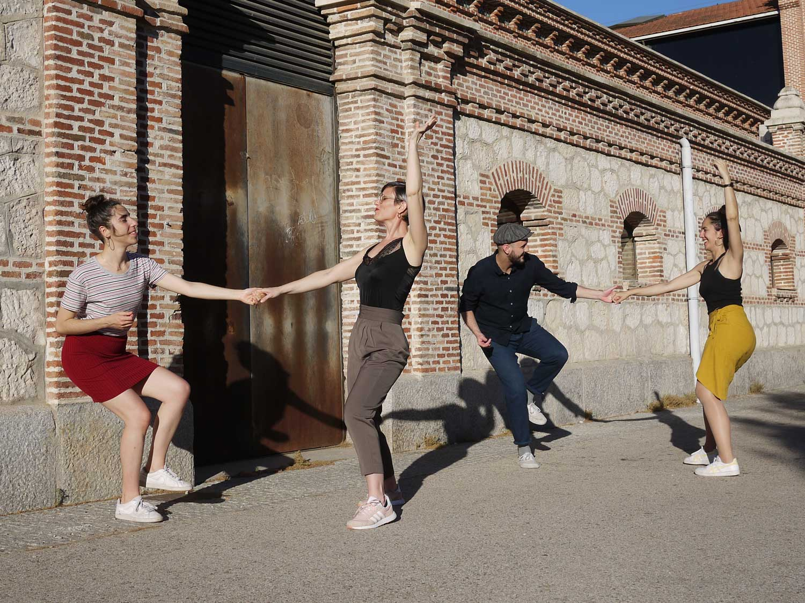

Lindy hop
Es el baile en pareja más popular de la música Swing (un estilo de Jazz). Se origina en 1928, en el barrio afroamericano de Harlem, Nueva York. Su nacimiento ocurre en pleno contexto de segregación racial, como una vía de expresión y escape para la comunidad negra. Fue desarrollándose en el club Savoy Ballroom, donde cada noche tocaban las mejores bandas de Jazz (Chick Webb, Count Basie…).
Desde ritmos vertiginosos hasta lentos, en el Lindy se improvisa con divertidas dinámicas, manteniendo siempre un groove muy gustoso. Dentro de la pareja hay una persona que propone movimientos (leader) y otra que los sigue activamente (follower). En este diálogo, tiene lugar la expresión individual, los juegos rítmicos, las propuestas desde follower y la escucha de leader, ¡una conversación bidireccional y con la música como guía!
La naturaleza de este baile es social, por lo que durante las clases irás rotando de pareja con tus compis.... y poco a poco, te irás lanzando a ir también a fiestas de Swing, ¡un ambiente muy adictivo!